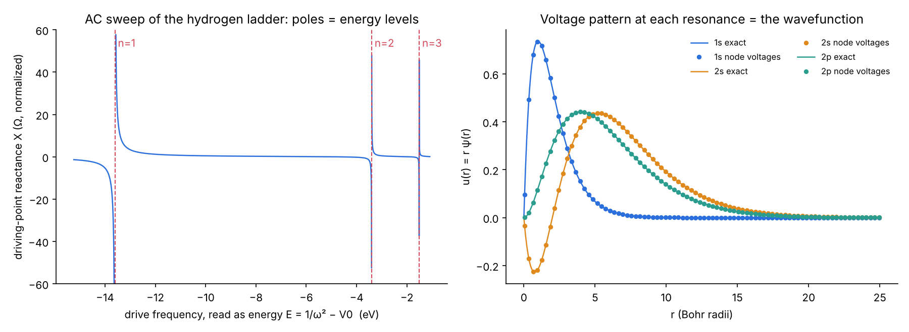
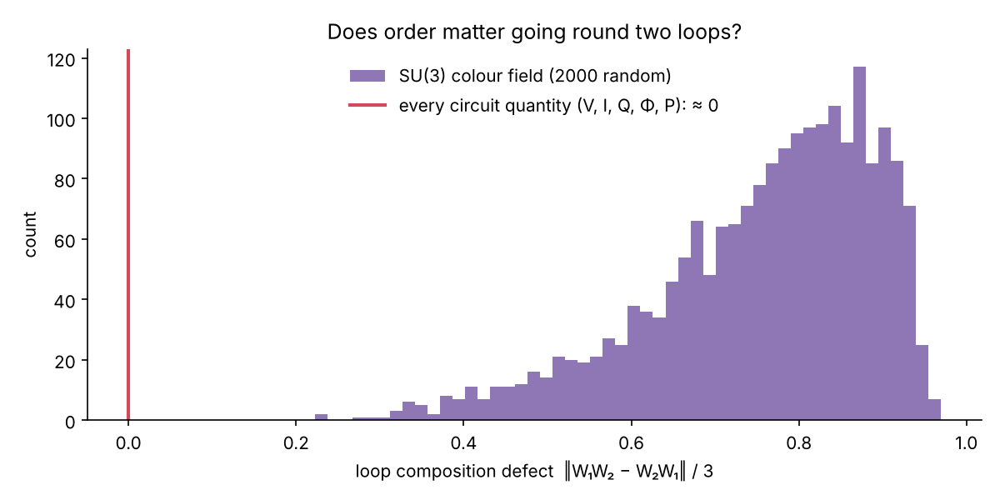

<!-- SPDX-License-Identifier: GPL-3.0-only OR LicenseRef-kronspice-Commercial -->
<!-- Copyright (C) 2026 Franklin Amador -->
<meta charset="utf-8">
<meta name="viewport" content="width=device-width, initial-scale=1, viewport-fit=cover">
<title>Quantum Mechanics by Circuit Analysis: An Evaluation</title>
<meta name="claude:viewport-fit-sides" content="cover">
<link rel="preconnect" href="https://fonts.googleapis.com">
<link rel="stylesheet" href="https://fonts.googleapis.com/css2?family=IBM+Plex+Sans:ital,wght@0,400;0,500;0,600;1,400&family=IBM+Plex+Mono:wght@400;500&family=IBM+Plex+Serif:wght@500;600&display=swap">
<style>
/* Layout: one reading column (~44rem) with figures allowed to run wider; a lab-report masthead; sections follow the script's Parts A and B. */
:root {
  --bg: #f6f7f8;
  --paper: #ffffff;
  --fg: #16191d;
  --muted: #59606a;
  --rule: #dde1e6;
  --accent: #2a78d6;   /* S, and the figures' blue */
  --north: #d9582a;    /* N, the figures' orange */
  --code-bg: #eef1f4;
  --display: "IBM Plex Serif", Georgia, "Times New Roman", serif;
  --body: "IBM Plex Sans", "Segoe UI", system-ui, -apple-system, sans-serif;
  --mono: "IBM Plex Mono", ui-monospace, "Cascadia Mono", Consolas, monospace;
}
@media (prefers-color-scheme: dark) {
  :root:not([data-theme="light"]) {
    --bg: #111418; --paper: #181c21; --fg: #e6e9ed; --muted: #9aa3ad; --rule: #2b3139;
    --accent: #5b9be6; --north: #ee7f52; --code-bg: #1f252c; color-scheme: dark;
  }
}
:root[data-theme="dark"] {
  --bg: #111418; --paper: #181c21; --fg: #e6e9ed; --muted: #9aa3ad; --rule: #2b3139;
  --accent: #5b9be6; --north: #ee7f52; --code-bg: #1f252c; color-scheme: dark;
}
* { box-sizing: border-box; }
body {
  background: var(--bg); color: var(--fg); font-family: var(--body);
  font-size: 1rem; line-height: 1.6; margin: 0;
  padding-left: max(16px, env(safe-area-inset-left, 0px));
  padding-right: max(16px, env(safe-area-inset-right, 0px));
}
main { max-width: 68rem; margin: 0 auto; padding-block: 2.5rem 4rem; display: grid; gap: 2.75rem; }
.col { max-width: 44rem; display: grid; gap: 0.9rem; min-width: 0; }
header.mast { display: grid; gap: 0.6rem; border-bottom: 1px solid var(--rule); padding-bottom: 1.6rem; }
.eyebrow { font-family: var(--mono); font-size: 0.78rem; letter-spacing: 0.08em; text-transform: uppercase; color: var(--muted); }
h1, h2, h3 { font-family: var(--display); font-weight: 600; line-height: 1.2; text-wrap: balance; margin: 0; }
h1 { font-size: clamp(1.9rem, 4.5vw, 2.7rem); }
h2 { font-size: 1.55rem; }
h3 { font-size: 1.12rem; font-family: var(--body); font-weight: 600; }
p { margin: 0; }
.lede { font-size: 1.1rem; color: var(--muted); max-width: 44rem; }
blockquote { margin: 0; padding: 0.2rem 0 0.2rem 1rem; border-left: 3px solid var(--north); font-family: var(--display); font-size: 1.15rem; font-style: italic; }
.meta { display: flex; flex-wrap: wrap; gap: 0.4rem 1.4rem; font-family: var(--mono); font-size: 0.82rem; color: var(--muted); }
.n { color: var(--north); font-weight: 600; }
.s { color: var(--accent); font-weight: 600; }
section { display: grid; gap: 1.2rem; }
.part { display: flex; align-items: baseline; gap: 0.8rem; }
.part .num { font-family: var(--mono); font-size: 0.85rem; color: var(--muted); }
ul { margin: 0; padding-left: 1.2rem; display: grid; gap: 0.35rem; }
code { font-family: var(--mono); font-size: 0.88em; background: var(--code-bg); padding: 0.05em 0.35em; border-radius: 3px; }
pre { margin: 0; background: var(--code-bg); padding: 0.9rem 1rem; border-radius: 6px; overflow-x: auto; font-family: var(--mono); font-size: 0.85rem; line-height: 1.5; }
.tablewrap { overflow-x: auto; }
table { border-collapse: collapse; width: 100%; font-size: 0.92rem; font-variant-numeric: tabular-nums; }
th, td { text-align: left; padding: 0.5rem 0.75rem 0.5rem 0; border-bottom: 1px solid var(--rule); vertical-align: top; }
th { font-weight: 600; font-size: 0.8rem; letter-spacing: 0.03em; color: var(--muted); }
td.num { font-family: var(--mono); font-size: 0.88rem; white-space: nowrap; }
figure { margin: 0; display: grid; gap: 0.55rem; }
figure .plate { background: #fcfcfb; border: 1px solid var(--rule); border-radius: 6px; padding: 0.4rem; overflow-x: auto; }
figure img { display: block; width: 100%; height: auto; max-width: 100%; }
figcaption { font-size: 0.88rem; color: var(--muted); max-width: 52rem; }
figcaption b { color: var(--fg); font-weight: 600; }
.pair { display: grid; grid-template-columns: repeat(auto-fit, minmax(min(100%, 20rem), 1fr)); gap: 1.2rem; }
.pair figure .plate { padding: 0; }
.status { display: grid; gap: 0.5rem; padding: 1.1rem 1.25rem; background: var(--paper); border: 1px solid var(--rule); border-left: 4px solid var(--accent); border-radius: 6px; }
.status .label { font-family: var(--mono); font-size: 0.78rem; letter-spacing: 0.08em; text-transform: uppercase; color: var(--muted); }
footer { border-top: 1px solid var(--rule); padding-top: 1.4rem; display: grid; gap: 0.8rem; font-size: 0.9rem; color: var(--muted); }
a { color: var(--accent); }
a:focus-visible { outline: 2px solid var(--accent); outline-offset: 2px; }
@media (prefers-reduced-motion: reduce) { .gif-note::after { content: " (animations play as GIFs; pause them in your browser if needed)"; } }
</style>

<main>
  <header class="mast">
    <span class="eyebrow">kronspice · examples/quantum_circuit_demo · Kron 1945 and hypothesis H22 · 12 November 2026</span>
    <h1>Quantum mechanics by circuit analysis: an evaluation</h1>
    <p class="lede">Two simulations from the 12 November discussion, written as one short script so the method can be read in one place. The first is hydrogen as a resonant LC ladder. The second tests whether circuit electricity behaves like the quark model. This report sets out what each one shows, how far it can be trusted, and what it does not show.</p>
    <div class="meta"><span>Hydrogen levels exact to 1×10⁻⁸ Ha</span><span>Lyman α 121.5684 nm (measured 121.5670)</span><span>H22: bounded (null result on SU(3))</span><span>Companions: <a href="../kron_schrodinger">kron_schrodinger</a> · <a href="../quantumtricity">quantumtricity</a> · <a href="../hydrogen_poles/hydrogen_spectrum_report.html">hydrogen spectrum</a></span></div>
  </header>

  <section>
    <div class="col">
      <h2>Verdict in brief</h2>
      <div class="tablewrap"><table>
        <thead><tr><th>Question</th><th>Result</th><th>Status</th></tr></thead>
        <tbody>
          <tr><td>Can a circuit solve the hydrogen atom?</td><td>Yes. The ladder's resonances are the exact s and p levels, and its node voltages are the exact wavefunctions.</td><td><span class="s">reproduced</span></td></tr>
          <tr><td>Is the circuit method more than standard quantum mechanics?</td><td>No. The network is a second-order finite-difference form of Schrödinger's equation, so it gives exactly what that equation gives.</td><td>standard</td></tr>
          <tr><td>Do Kirchhoff's laws form a gauge theory?</td><td>Yes, the abelian U(1) one, to round-off on every identity tested.</td><td><span class="s">reproduced</span></td></tr>
          <tr><td>Is circuit electricity the quark model (H22)?</td><td>Not as tested. Colour fields compose in a way that depends on order (defect 0.76 on average), while every circuit quantity composes as plain numbers (defect 0).</td><td><span class="n">bounded</span></td></tr>
        </tbody>
      </table></div>
    </div>
  </section>

  <section>
    <div class="col">
      <div class="part"><span class="num">PART A</span><h2>Hydrogen as a resonant ladder circuit</h2></div>
      <p>Gabriel Kron showed in 1945 that the radial Schrödinger equation, −½u″ + V<sub>l</sub>(r)u = Eu, is an electric network. The script builds it in the dual form used by <code>kron_schrodinger</code>, because the all-inductor form has loops of shorts at DC:</p>
      <div class="tablewrap"><table>
        <thead><tr><th>Circuit element</th><th>Quantum meaning</th></tr></thead>
        <tbody>
          <tr><td>series capacitor 1/(2h²) between neighbouring nodes</td><td>kinetic energy</td></tr>
          <tr><td>shunt capacitor V<sub>l</sub>(r) + V0 at each node</td><td>potential energy: −1/r, plus l(l+1)/2r² for p states</td></tr>
          <tr><td>shunt inductor of 1 H at each node</td><td>the energy</td></tr>
          <tr><td>short circuit at r = 0 and at r = 60 a0</td><td>the boundary conditions u = 0</td></tr>
          <tr><td>node voltage</td><td>the wavefunction u(r) = rψ(r)</td></tr>
          <tr><td>resonance at ω² = 1/(E + V0)</td><td>an energy level E</td></tr>
        </tbody>
      </table></div>
      <p>A 1 A AC source drives the node at r = 1 a0. A sweep of 4000 frequencies brackets each pole of the driving-point reactance, and bisection locates it to machine precision. A separate Sturm-sequence eigen-solve of the same network matrix checks every resonance. Grids of h = 0.04, 0.02 and 0.01 a0 (1499 to 5999 nodes) are combined by Richardson extrapolation.</p>
    </div>

    <figure>
      <div class="plate"></div>
      <figcaption><b>Fig. A1.</b> Left: the AC sweep at h = 0.02 a0. The reactance has a pole wherever the drive frequency hits an energy level, here at n = 1, 2 and 3 (dashed lines are the exact levels). Right: the node voltages driven just off each resonance (dots, h = 0.05 a0) lie on the exact 1s, 2s and 2p radial wavefunctions (lines).</figcaption>
    </figure>

    <div class="col">
      <h3>Results</h3>
      <div class="tablewrap"><table>
        <thead><tr><th>State</th><th>Circuit, h → 0</th><th>Exact</th><th>Error</th><th>Convergence order</th></tr></thead>
        <tbody>
          <tr><td>1s</td><td class="num">−0.500000010 Ha</td><td class="num">−0.5</td><td class="num">−1.0×10⁻⁸</td><td class="num">2.00</td></tr>
          <tr><td>2s</td><td class="num">−0.125000000</td><td class="num">−0.125</td><td class="num">−1.6×10⁻¹⁰</td><td class="num">2.00</td></tr>
          <tr><td>3s</td><td class="num">−0.055555556</td><td class="num">−1/18</td><td class="num">+1.8×10⁻¹¹</td><td class="num">2.00</td></tr>
          <tr><td>2p</td><td class="num">−0.125000000</td><td class="num">−0.125</td><td class="num">−6.2×10⁻¹¹</td><td class="num">2.00</td></tr>
          <tr><td>3p</td><td class="num">−0.055555556</td><td class="num">−1/18</td><td class="num">−7.4×10⁻¹²</td><td class="num">2.00</td></tr>
        </tbody>
      </table></div>
      <div class="tablewrap"><table>
        <thead><tr><th>Line (reduced mass applied)</th><th>Circuit</th><th>Measured</th><th>Difference</th></tr></thead>
        <tbody>
          <tr><td>Lyman α, 2p → 1s</td><td class="num">121.5684 nm</td><td class="num">121.5670 nm</td><td class="num">+12 ppm</td></tr>
          <tr><td>Balmer α, 3p → 2s</td><td class="num">656.470 nm</td><td class="num">656.46 nm</td><td class="num">≈ +15 ppm</td></tr>
        </tbody>
      </table></div>
      <p>The AC resonances and the eigen-solve agree to within 8×10⁻¹³ Ha on every grid. The 1s line agrees with the 121.5689 nm that <code>hydrogen_poles</code> finds with kronspice itself.</p>

      <h3>Evaluation</h3>
      <ul>
        <li><b>The method is sound.</b> The levels converge at exactly second order, as a centred difference scheme should for the smooth u(r) of s and p states. After extrapolation they are exact to 10⁻⁸ Ha or better. Two independent solvers agree to 10⁻¹². The voltage patterns are the textbook wavefunctions.</li>
        <li><b>The circuit is a faithful analogue, not new physics.</b> Its nodal equations are, term for term, the discretized Schrödinger equation. So it can only reproduce what that equation contains. Agreement with measurement is a check on the build, not evidence for any reading of the atom beyond standard quantum mechanics.</li>
        <li><b>What is missing is known.</b> The residual 12–15 ppm is the Dirac fine structure and the Lamb shift, which this network leaves out. <code>hydrogen_poles</code> adds spin–orbit and closes the fine structure to −18 ppm. The Lamb shift needs QED, which no network here models.</li>
        <li><b>Untested pieces.</b> <code>hydrogen_ladder.cir</code> (79 nodes, h = 0.25 a0, 1s resonance at E = −0.492423 Ha, f = 0.083794 Hz in normalized units) has not yet been run through ngspice or the kronspice netlist parser. That run is the next check.</li>
      </ul>
    </div>
  </section>

  <section>
    <div class="col">
      <div class="part"><span class="num">PART B</span><h2>Quantumtricity (H22): circuit electricity against the quark model</h2></div>
      <p>Register entry H22 proposes that the Ohm's-law wheel (V, I, R, P) and the Standard Model describe one structure, with the quark model being circuit electricity at the quantum level. Both a circuit and the lattice form of the quark model are fields on a graph, with values on the links and loops formed from them. The test asks whether they compose in the same way.</p>

      <h3>Step 1: a circuit is a U(1) gauge theory</h3>
      <p>The test circuit is a two-mesh RLC at 1 kHz: V1 1 V, R1 100 Ω, L1 10 mH, C1 1 µF shared by both meshes, L2 20 mH, R2 50 Ω. It is solved by mesh analysis on its incidence matrix A and loop matrix C.</p>
      <div class="tablewrap"><table>
        <thead><tr><th>Gauge-theory identity</th><th>Circuit law</th><th>Residual</th></tr></thead>
        <tbody>
          <tr><td>Curl ∘ Grad = 0</td><td>A·C = 0</td><td class="num">0</td></tr>
          <tr><td>a pure-gauge field has zero holonomy</td><td>KVL, Cᵀv = 0</td><td class="num">1×10⁻¹⁶</td></tr>
          <tr><td>the field is the gradient of a potential</td><td>v = Aᵀφ</td><td class="num">8×10⁻¹⁶</td></tr>
          <tr><td>Gauss's law</td><td>KCL, A·i = 0</td><td class="num">0</td></tr>
          <tr><td>gauge invariance</td><td>φ → φ + constant leaves v</td><td class="num">1×10⁻¹⁵</td></tr>
          <tr><td>energy conservation</td><td>source power = resistor power (1.016254 mW)</td><td class="num">2×10⁻¹⁹ W</td></tr>
        </tbody>
      </table></div>

      <h3>Step 2: the SU(3) test</h3>
      <p>A random 3×3 colour matrix (Haar-distributed SU(3)) goes on every branch of the same graph. Both loops are based at the node they share, and the script compares going round loop 1 then loop 2 (W₁W₂) with the reverse order (W₂W₁). It does the same with each circuit quantity carried as a phase exp(ix) on each branch.</p>
    </div>

    <figure>
      <div class="plate"></div>
      <figcaption><b>Fig. B1.</b> The loop composition defect ‖W₁W₂ − W₂W₁‖/3 for 2000 random colour fields (purple) against every circuit quantity (red line at 0). The colour field never commutes, and no circuit quantity ever fails to.</figcaption>
    </figure>

    <div class="col">
      <div class="tablewrap"><table>
        <thead><tr><th>Link variables</th><th>Composition defect</th></tr></thead>
        <tbody>
          <tr><td>random SU(3), 2000 fields</td><td class="num">mean 0.758, min 0.223, max 0.969</td></tr>
          <tr><td>diagonal (Cartan) SU(3), the abelian part</td><td class="num">≤ 6×10⁻¹⁷</td></tr>
          <tr><td>voltage, current, charge, flux, complex power</td><td class="num">0</td></tr>
          <tr><td>gauge transformation g<sub>from</sub>U g<sub>to</sub>†: change in Wilson-loop traces</td><td class="num">≤ 3×10⁻¹⁵</td></tr>
        </tbody>
      </table></div>

      <h3>Evaluation</h3>
      <ul>
        <li><b>Step 1 is a real and exact correspondence.</b> Kirchhoff's voltage and current laws are the two identities of an abelian lattice gauge theory. This is standard (Kron 1944; Tonti's cell method), and the repository's <code>quantumtricity</code> example extends it to a full Yee grid that matches FDTD to round-off.</li>
        <li><b>Step 2 is close to true by construction, and that is the finding.</b> Circuit quantities are single numbers on each branch, and numbers always commute. So the zero defect is not a measurement that could have come out otherwise. Rather, it shows <i>why</i> circuits are abelian: no branch of an ordinary circuit carries an internal index for a matrix to act on. The SU(3) row, the abelian (Cartan) control and the gauge-invariance check confirm that the test itself can detect non-commuting composition when it is present.</li>
        <li><b>Where the quantum level of V, I and R actually lies.</b> Since the 2019 SI, the volt and ohm are realized through e and h (Josephson 2e/h, von Klitzing h/e²), carried by electrons and photons. Quarks enter a conductor only through the nuclear charge of its atoms.</li>
        <li><b>Status: bounded.</b> H22 is neither confirmed nor ruled out in every form. What is ruled out is that ordinary circuit variables, linear or nonlinear, compose like colour fields.</li>
      </ul>
    </div>
  </section>

  <section>
    <div class="col">
      <h2>What would move H22, and next steps</h2>
      <div class="status">
        <span class="label">Open</span>
        <p>A circuit quantity that carries an index along its branches, so that the value on a branch is a matrix rather than a number, and whose loop products do not commute. Without one, the circuit stays the U(1) limit.</p>
      </div>
      <ul>
        <li><b>The matter sector.</b> Put colour-triplet charges on the nodes, with hopping currents along the links. This is the quark side of the dictionary, still open in <code>quantumtricity</code>. The candidate circuit realization is a multi-conductor or polyphase network, where each branch carries a vector of currents and a coupling matrix between them.</li>
        <li><b>Engineered gauge fields.</b> Superconducting circuits that emulate lattice gauge theories (Marcos et al. 2013) are the established way to get non-abelian behaviour from circuitry. They are the right benchmark to compare against.</li>
        <li><b>Close Part A's loose end.</b> Run <code>hydrogen_ladder.cir</code> through ngspice and through kronspice's netlist parser, and confirm the pole at 0.083794 Hz.</li>
        <li><b>Port to Go.</b> If this demo is kept, a Go version that uses kronspice's own <code>analysis</code> package (as <code>kron_schrodinger</code> does) would let it run in the repository's test suite.</li>
      </ul>
    </div>
  </section>

  <footer>
    <div class="col">
      <span class="eyebrow">Reproduce</span>
      <pre>python3 examples/quantum_circuit_demo/quantum_circuit_demo.py    # about 15 s, numpy + matplotlib
go run ./examples/kron_schrodinger                               # the kronspice versions
go run ./examples/quantumtricity</pre>
      <p>The run of 12 November 2026 is in <code>run_output.txt</code>. Runs on two machines agreed to the last printed digit, except for round-off-level residuals (10⁻¹⁵ and below).</p>
      <span class="eyebrow">Sources</span>
      <ul>
        <li>G. Kron, “Electric circuit models of the Schrödinger equation,” <i>Phys. Rev.</i> 67, 39 (1945).</li>
        <li>G. Kron, “Equivalent circuit of the field equations of Maxwell — I,” <i>Proc. IRE</i> 32, 289 (1944); E. Tonti, <i>PIER</i> 32, 1 (2001).</li>
        <li>K. G. Wilson, “Confinement of quarks,” <i>Phys. Rev. D</i> 10, 2445 (1974); J. Kogut, L. Susskind, <i>Phys. Rev. D</i> 11, 395 (1975).</li>
        <li>D. Marcos, P. Rabl, E. Rico, P. Zoller, <i>Phys. Rev. Lett.</i> 111, 110504 (2013).</li>
        <li>CODATA 2018 (hartree, proton–electron mass ratio); NIST Atomic Spectra Database (hydrogen vacuum wavelengths); BIPM, <i>SI Brochure</i>, 9th ed. (2019).</li>
      </ul>
    </div>
  </footer>
</main>
